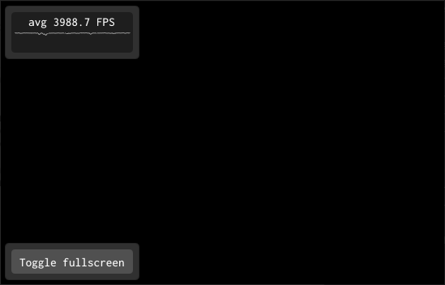

2.3 Primeiro programa
Nesta seção seguiremos um passo a passo de construção de um primeiro programa com a biblioteca ABCg. Será o nosso “Hello, World!” similar ao exemplo da ABCg mostrado na seção 1.5, mas sem o triângulo colorido renderizado com OpenGL.
Configuração inicial
Faça uma cópia (ou fork) de https://github.com/hbatagelo/abcg.git. Assim você poderá modificar livremente a biblioteca e armazená-la em seu repositório pessoal.
Como a ABCg já tem um projeto de exemplo chamado
helloworld, vamos chamar o nosso defirstapp. Emabcg/examples, crie o subdiretórioabcg/examples/firstapp.A escolha de deixar o projeto como um subdiretório de
abcg/examplesé conveniente pois podemos replicar a configuração deabcg/examples/helloworld. Assim, bastará construir a ABCg e o nosso projeto será automaticamente construído como um exemplo adicional da biblioteca.Abra o arquivo
abcg/examples/CMakeLists.txte acrescente a linhaadd_subdirectory(firstapp). O conteúdo ficará assim:add_subdirectory(helloworld) add_subdirectory(firstapp)Dessa forma o CMake incluirá o subdiretório
firstappna busca de um scriptCMakeLists.txtcontendo a configuração do projeto.Crie o arquivo
abcg/examples/firstapp/CMakeLists.txt. Edite-o com o seguinte conteúdo:project(firstapp) add_executable(${PROJECT_NAME} main.cpp openglwindow.cpp) enable_abcg(${PROJECT_NAME})O comando
projectna primeira linha define o nome do projeto. Em seguida,add_executabledefine que o executável terá o mesmo nome definido emprojecte será gerado a partir dos fontesmain.cppeopenglwindow.cpp(não é necessário colocar os arquivos.hou.hpp). Por fim, a funçãoenable_abcg()configura o projeto para usar a ABCg. Essa função é definida emabcg/cmake/ABCg.cmake, que é um script CMake chamado a partir doCMakeLists.txtdo diretório raiz.Em
abcg/examples/firstapp, crie os arquivosmain.cpp,openglwindow.cppeopenglwindow.hpp. Vamos editá-los a seguir.
main.cpp
Em main.cpp definiremos a função main:
#include "abcg.hpp"
#include "openglwindow.hpp"
int main(int argc, char **argv) {
// Create application instance
abcg::Application app(argc, argv);
// Create OpenGL window
auto window{std::make_unique<OpenGLWindow>()};
window->setWindowSettings({.title = "First App"});
// Run application
app.run(std::move(window));
return 0;
}Nas duas primeiras linhas são incluídos os arquivos de cabeçalho:
abcg.hppfaz parte da ABCg e dá acesso às principais classes e funções da biblioteca;openglwindow.hppé o arquivo que acabamos de criar e que terá a definição de uma classeOpenGLWindowresponsável pelo comportamento da janela da aplicação;Na linha 6 é definido um objeto
appda classeabcg::Application, responsável pelo gerenciamento da aplicação;Na linha 9 é criado um ponteiro inteligente (smart pointer)
windowpara uma instância deOpenGLWindow;Na linha 10 é definido o título da janela.
setWindowSettingsé uma função membro deabcg::OpenGLWindow(classe base deOpenGLWindow) e recebe uma estruturaabcg::WindowSettingscontendo as configurações da janela;Na linha 13, a função membro
abcg::Application::runé chamada para inicializar os subsistemas da SDL, inicializar a janela recém-criada e entrar no laço principal da aplicação.
- Todas as classes e funções da ABCg fazem parte do namespace
abcg. - O código acima usa diferentes conceitos de C++ moderno:
- A palavra-chave
autopara dedução automática do tipo de variável a partir de sua inicialização; - A criação de um ponteiro inteligente com
std::make_unique; - O uso de inicialização uniforme com chaves;
- O uso de inicializadores designados para inicializar o membro
titleda estruturaabcg::WindowSettingsdiretamente através de seu nome; - O uso de
std::movepara indicar que o ponteiro inteligentewindowestá sendo transferido (e não copiado) paraabcg::Application.
- A palavra-chave
Internamente a ABCg usa tratamento de exceções. As exceções são lançadas como objetos da classe abcg::Exception, derivada de std::exception. Vamos alterar um pouco o código anterior para capturar as exceções que possam ocorrer e imprimir no console a mensagem de erro correspondente. O código final de main.cpp ficará assim:
#include <fmt/core.h>
#include "abcg.hpp"
#include "openglwindow.hpp"
int main(int argc, char **argv) {
try {
// Create application instance
abcg::Application app(argc, argv);
// Create OpenGL window
auto window{std::make_unique<OpenGLWindow>()};
window->setWindowSettings({.title = "First App"});
// Run application
app.run(std::move(window));
} catch (const abcg::Exception &exception) {
fmt::print(stderr, "{}\n", exception.what());
return -1;
}
return 0;
}O que mudou aqui é que o código anterior foi colocado dentro do escopo try de um bloco try...catch. No escopo catch, a função fmt::print imprime no erro padrão (stderr) a mensagem de erro associada com a exceção capturada. fmt::print faz parte da biblioteca {fmt}, incluída pelo cabeçalho fmt/core.h. Ela permite a formatação de strings usando uma sintaxe parecida com as f-strings da linguagem Python5.
openglwindow.hpp
No arquivo openglwindow.hpp vamos definir a classe OpenGLWindow que será responsável pelo gerenciamento do conteúdo da janela da aplicação:
#ifndef OPENGLWINDOW_HPP_
#define OPENGLWINDOW_HPP_
#include "abcg.hpp"
class OpenGLWindow : public abcg::OpenGLWindow {};
#endifObserve que nossa classe OpenGLWindow é derivada de abcg::OpenGLWindow, que faz parte da ABCg.
abcg::OpenGLWindow gerencia uma janela capaz de renderizar gráficos com a API OpenGL. A classe possui um conjunto de funções virtuais que podem ser substituídas pela classe derivada de modo a alterar o comportamento da janela. O comportamento padrão é desenhar a janela com fundo preto, com um contador de FPS (frames per second, ou quadros por segundo) sobreposto no canto superior esquerdo da janela, e um botão no canto inferior esquerdo para alternar entre tela cheia e modo janela (com atalho pela tecla F11). O contador e o botão são gerenciados pela biblioteca Dear ImGui (no restante do texto vamos chamá-la apenas de ImGui).
Por enquanto nossa classe não faz nada de especial. Ela só deriva de abcg::OpenGLWindow e não define nenhuma função ou variável membro. Mesmo assim, já podemos construir a aplicação. Experimente fazer isso. Na linha de comando, use o script build.sh (Linux/macOS) ou build.bat (Windows). Se você estiver no Visual Studio Code, abra a pasta abcg pelo editor, use a opção de configuração do CMake e então construa o projeto (F7). O executável será gerado em abcg/build/bin/firstapp.
Da forma como está, a aplicação mostrará uma janela com fundo preto e os dois controles de GUI (widgets) mencionados anteriomente. Isso acontece porque OpenGLWindow não está substituindo nenhuma das funções virtuais de abcg::OpenGLWindow. Todo o comportamento está sendo definido pela classe base:

Vamos alterar o conteúdo e o comportamento dessa nossa janela OpenGLWindow. Imitaremos o comportamento do projeto helloworld que cria uma pequena janela da ImGui. Modifique openglwindow.hpp para o código a seguir:
#ifndef OPENGLWINDOW_HPP_
#define OPENGLWINDOW_HPP_
#include <array>
#include "abcg.hpp"
class OpenGLWindow : public abcg::OpenGLWindow {
protected:
void initializeGL() override;
void paintGL() override;
void paintUI() override;
private:
std::array<float, 4> m_clearColor{0.906f, 0.910f, 0.918f, 1.0f};
};
#endifinitializeGL, paintGL e paintUI substituem funções virtuais de abcg::OpenGLWindow. A palavra-chave override é opcional mas é recomendável, pois deixa explícito que as funções são substituições das funções virtuais da classe base:
initializeGLé onde colocaremos os comandos de inicialização do estado da janela e do OpenGL. Internamente a ABCg chama essa função apenas uma vez no início do programa, após ter inicializado os subsistemas da SDL e o OpenGL.paintGLé onde colocaremos todas as funções de desenho do OpenGL. Internamente a ABCg chama essa função continuamente no laço principal da aplicação, uma vez para cada quadro (frame) de exibição. Por exemplo, na imagem acima,paintGLestava sendo chamada a uma média de 3988.7 vezes por segundo;paintUIé onde colocaremos todas as funções de desenho de widgets da ImGui (botões, menus, caixas de seleção, etc). Internamente,paintUIé chamado sempre quepaintGLé chamado;m_clearColoré um arranjo de quatro valoresfloatentre 0 e 1. Esses valores definem a cor de fundo da janela (neste caso, um cinza claro).
Poderíamos ter definido m_clearColor da seguinte forma, mais familiar aos programadores em C:
float m_clearColor[4] = {0.906f, 0.910f, 0.918f, 1.0f};Entretanto, em C++ o std::array é a forma recomendada e mais segura de trabalhar com arranjos.
openglwindow.cpp
Em openglwindow.cpp definiremos as funções virtuais substituídas:
#include <fmt/core.h>
#include "openglwindow.hpp"
#include <imgui.h>
void OpenGLWindow::initializeGL() {
auto windowSettings{getWindowSettings()};
fmt::print("Initial window size: {}x{}\n", windowSettings.width,
windowSettings.height);
}
void OpenGLWindow::paintGL() {
// Set the clear color
abcg::glClearColor(m_clearColor[0], m_clearColor[1], m_clearColor[2],
m_clearColor[3]);
// Clear the color buffer
abcg::glClear(GL_COLOR_BUFFER_BIT);
}
void OpenGLWindow::paintUI() {
// Parent class will show fullscreen button and FPS meter
abcg::OpenGLWindow::paintUI();
// Our own ImGui widgets go below
{
// Window begin
ImGui::Begin("Hello, First App!");
// Static text
auto windowSettings{getWindowSettings()};
ImGui::Text("Current window size: %dx%d (in windowed mode)",
windowSettings.width, windowSettings.height);
// Slider from 0.0f to 1.0f
static float f{};
ImGui::SliderFloat("float", &f, 0.0f, 1.0f);
// ColorEdit to change the clear color
ImGui::ColorEdit3("clear color", m_clearColor.data());
// More static text
ImGui::Text("Application average %.3f ms/frame (%.1f FPS)",
1000.0 / ImGui::GetIO().Framerate, ImGui::GetIO().Framerate);
// Window end
ImGui::End();
}
}No início do arquivo, observe que é incluído o cabeçalho imgui.h para o uso das funções da ImGui.
Vejamos com mais atenção o trecho com a definição de OpenGLWindow::initializeGL:
void OpenGLWindow::initializeGL() {
auto windowSettings{getWindowSettings()};
fmt::print("Initial window size: {}x{}\n", windowSettings.width,
windowSettings.height);
}Na linha 8, windowSettings é uma estrutura abcg::WindowSettings retornada por abcg::OpenGLWindow::getWindowSettings() com as configurações da janela. Na linha 9, fmt::print imprime no console o tamanho da janela6.
Observe agora o trecho com a definição de OpenGLWindow::paintGL:
void OpenGLWindow::paintGL() {
// Set the clear color
abcg::glClearColor(m_clearColor[0], m_clearColor[1], m_clearColor[2],
m_clearColor[3]);
// Clear the color buffer
abcg::glClear(GL_COLOR_BUFFER_BIT);
}Aqui são chamadas duas funções do OpenGL: glClearColor e glClear.
glClearColoré utilizada para determinar a cor que será usada para limpar a janela7. A função recebe quatro parâmetros do tipofloat(red,green,blue,alpha), que correspondem a componentes de cor RGB e um valor adicional de opacidade (alpha). Esse formato de cor é chamado de RGBA. Os valores são fixados (clamped) no intervalo \([0,1]\) em ponto flutuante.glClear, usando como argumento a constanteGL_COLOR_BUFFER_BIT, limpa a janela com a cor especificada na última chamada deglClearColor.
Em resumo, nosso paintGL limpa a tela com a cor RGBA especificada em m_clearColor.
As funções do OpenGL são prefixadas com as letras
gl;As constantes do OpenGL são prefixadas com
GL_.A versão mais recente do OpenGL é a 4.6. A documentação de cada versão está disponível em
https://www.khronos.org/registry/OpenGL/.Neste curso, usaremos as funções do OpenGL que são comuns ao OpenGL ES 3.0 de modo a manter compatibilidade com o WebGL 2.0. Assim conseguiremos fazer aplicações que rodam tanto no desktop quanto no navegador.
Na ABCg, podemos usar as funções gl dentro do namespace abcg de modo a rastrear erros do OpenGL com o sistema de tratamento de exceções da ABCg.
Por exemplo, ao escrevermos abcg::glClear no lugar de glClear, estamos na verdade chamando uma função wrapper que verifica automaticamente se a chamada da função OpenGL é válida. Se algum erro ocorrer, uma exceção é lançada e capturada pelo catch que implementamos na função main. A mensagem de erro (a string em exception.what()) inclui a descrição do erro, o nome do arquivo, o nome da função e o número da linha do código onde o erro foi detectado. Isso pode ser muito útil para a depuração de erros do OpenGL. Por isso, sempre que possível, prefixe as funções do OpenGL com abcg::.
A verificação automática de erros do OpenGL é habilitada somente quando a aplicação é compilada no modo Debug. Não há sobrecarga nas chamadas das funções do OpenGL com o namespace abcg quando a aplicação é compilada em modo Release.
Agora vamos à definição de OpenGLWindow::paintUI, responsável pelo desenho da interface usando a ImGui:
void OpenGLWindow::paintUI() {
// Parent class will show fullscreen button and FPS meter
abcg::OpenGLWindow::paintUI();
// Our own ImGui widgets go below
{
// Window begin
ImGui::Begin("Hello, First App!");
// Static text
auto windowSettings{getWindowSettings()};
ImGui::Text("Current window size: %dx%d (in windowed mode)",
windowSettings.width, windowSettings.height);
// Slider from 0.0f to 1.0f
static float f{};
ImGui::SliderFloat("float", &f, 0.0f, 1.0f);
// ColorEdit to change the clear color
ImGui::ColorEdit3("clear color", m_clearColor.data());
// More static text
ImGui::Text("Application average %.3f ms/frame (%.1f FPS)",
1000.0 / ImGui::GetIO().Framerate, ImGui::GetIO().Framerate);
// Window end
ImGui::End();
}
}Na linha 23 é chamada a função membro
paintUIda classe base. ApaintUIda classe base mostra o medidor de FPS e o botão para alternar a tela cheia.Na linha 28 é criada uma janela da ImGui com o título “Hello, First App!” A partir desta linha, até a linha 47, todas as chamadas a funções da ImGui criam widgets dentro dessa janela. Apenas para isso ficar mais explícito, todo o código está dentro do escopo delimitado pelas chaves nas linhas 26 e 48.
Na linha 32 é criado um texto estático mostrando o tamanho atual da janela.
Na linha 37 é criado um slider horizontal que pode variar de 0 a 1 em ponto flutuante. O valor do slider é armazenado em
f. A variávelfé declarada comostaticpara que seu estado seja retido entre as chamadas depaintUI(outra opção é declarar a variável como membro da classe).Na linha 40 é criado um widget de edição de cor para alterar os valores de
m_clearColor.Na linha 43 é criado mais um texto estático com informações de FPS extraídas de
ImGui::GetIO().Framerate.
Esse código é praticamente o mesmo do “Hello, World!” Construa a aplicação para ver o resultado:
A seguir temos alguns exemplos de uso de outros widgets da ImGui. Experimente incluir esses trechos de código no paintUI:
Botões:
// 100x50 button if (ImGui::Button("Press me!", ImVec2(100, 50))) { fmt::print("Button pressed.\n"); } // Nx50 button, where N is the remaining width available ImGui::Button("Press me!", ImVec2(-1, 50)); // See also IsItemHovered, IsItemActive, etc if (ImGui::IsItemClicked()) { fmt::print("Button pressed.\n"); }Checkbox:
static bool enabled{true}; ImGui::Checkbox("Some option", &enabled); fmt::print("The checkbox is {}\n", enabled ? "enabled" : "disabled");Combo box:
static std::size_t currentIndex{}; std::vector<std::string> comboItems{"AAA", "BBB", "CCC"}; if (ImGui::BeginCombo("Combo box", comboItems.at(currentIndex).c_str())) { for (auto index{0u}; index < comboItems.size(); ++index) { const bool isSelected{currentIndex == index}; if (ImGui::Selectable(comboItems.at(index).c_str(), isSelected)) currentIndex = index; // Set the initial focus when opening the combo (scrolling + keyboard // navigation focus) if (isSelected) ImGui::SetItemDefaultFocus(); } ImGui::EndCombo(); } fmt::print("Selected combo box item: {}\n", comboItems.at(currentIndex));Menu (em uma janela de tamanho fixo e com o flag adicional
ImGuiWindowFlags_MenuBarpara permitir o uso da barra de menu):ImGui::SetNextWindowSize(ImVec2(300, 100)); auto flags{ImGuiWindowFlags_MenuBar | ImGuiWindowFlags_NoResize}; ImGui::Begin("Window with menu", nullptr, flags); { bool save{}; static bool showCompliment{}; // Hold state // Menu Bar if (ImGui::BeginMenuBar()) { // File menu if (ImGui::BeginMenu("File")) { ImGui::MenuItem("Save", nullptr, &save); ImGui::EndMenu(); } // View menu if (ImGui::BeginMenu("View")) { ImGui::MenuItem("Show Compliment", nullptr, &showCompliment); ImGui::EndMenu(); } ImGui::EndMenuBar(); } if (save) { // Save file... } if (showCompliment) { ImGui::Text("You're a beautiful person."); } } ImGui::End();Mais sliders:
static std::array pos2d{0.0f, 0.0f}; ImGui::SliderFloat2("2D position", pos2d.data(), 0.0, 50.0); static std::array pos3d{0.0f, 0.0f, 0.0f}; ImGui::SliderFloat3("3D position", pos3d.data(), -1.0, 1.0);
Infelizmente, a ImGui não tem um manual com exemplos de uso de todos os widgets suportados. A melhor referência atualmente é o código da função ImGui::ShowDemoWindow em abcg/external/imgui/imgui_demo.cpp. Essa função cria uma janela de demonstração contendo uma grande variedade de exemplos de uso de widgets e recursos da ImGui. No exemplo “Hello, World!” tal janela é exibida quando o checkbox “Show demo window” está ativado.
A ImGui é uma biblioteca de GUI que trabalha em modo imediato, isto é, não retém o estado das janelas e widgets (o “Im” de ImGui vem de immediate mode). Isso significa que, sempre que paintUI é chamado, a GUI é redefinida por completo. O gerenciamento da persistência de estado deve ser feito pelo usuário, por exemplo, através de variáveis estáticas ou variáveis membros da classe.
Usando o projeto firstapp como base, faça um “Jogo da Velha” com interface composta de widgets da ImGui:
- Simule o tabuleiro do jogo com um arranjo de 3x3 botões. Inicialmente deixe os botões sem texto. Cada vez que um botão for pressionado, substitua-o por um
XouOde acordo com o turno do jogador; - Use um widget de texto estático para mostrar informações como o resultado do jogo e o turno atual;
- Inclua um menu com uma opção para reiniciar o jogo.
Explore diferentes funções da biblioteca, tais como:
ImGui::Columnspara fazer arranjos de widgets;ImGui::Spacingpara adicionar espaçamentos verticais;ImGui::SameLinepara criar widgets lado-a-lado e ajustar o espaçamento horizontal;ImGui::Separator()para desenhar linhas de separação.
Um exemplo é dado a seguir:
Compilando para WebAssembly
Para compilar para WebAssembly basta usar o script build-wasm.sh (Linux/macOS) ou build-wasm.bat (Windows). Apenas certifique-se de habilitar antes as variáveis de ambiente do SDK do Emscripten como fizemos na seção 1.5.
Após a construção do projeto, os arquivos resultantes (firstapp.js e firstapp.wasm) estarão no subdiretório public. Para usá-los, precisamos de um arquivo HTML.
Faça uma cópia de um dos arquivos HTML já existentes (helloworld.html, full_window.html ou full_window_console.html). No final do arquivo copiado, mude a string src="helloworld.js" para src="firstapp.js", assim:
<script async type="text/javascript" src="firstapp.js"></script>Para testar, monte o servidor local com runweb.sh ou runweb.bat e abra o arquivo HTML em http://localhost:8080/.
Disponibilize o conteúdo web de seus projetos no GitHub Pages para formar um portfólio de atividades feitas no curso:
Na sua conta do GitHub, crie um repositório com visibilidade pública. Pode ser seu próprio fork da ABCg.
No diretório raiz, crie um subdiretório
firstappcom os arquivosfirstapp.*, mas renomeiefirstapp.htmlparaindex.html;Nas configurações do repositório no GitHub, habilite o GitHub Pages informando o branch que será utilizado (por exemplo,
main).
O conteúdo estará disponível em https://username.github.io/reponame/firstapp/ onde username e reponame são respectivamente seu nome de usuário e o nome do repositório.
Ao longo do curso, suba seus projetos nesse repositório. No diretório raiz, mantenha um index.html com a descrição do portfólio e o link para cada página de projeto.
Um subconjunto da
{fmt}foi incorporado à biblioteca de formatação de texto no C++20, mas ainda não há suporte equivalente aofmt::print(impressão formatada com saída padrão).↩︎O tamanho padrão para uma aplicação desktop é 800x600. Na versão para web, a janela pode ser redimensionada de acordo com a regra CSS do elemento canvas do HTML5.↩︎
Mais precisamente,
glClearColordefine a cor que será utilizada para limpar os buffers de cor do framebuffer. Veremos mais sobre o conceito de framebuffer nos próximos capítulos.↩︎